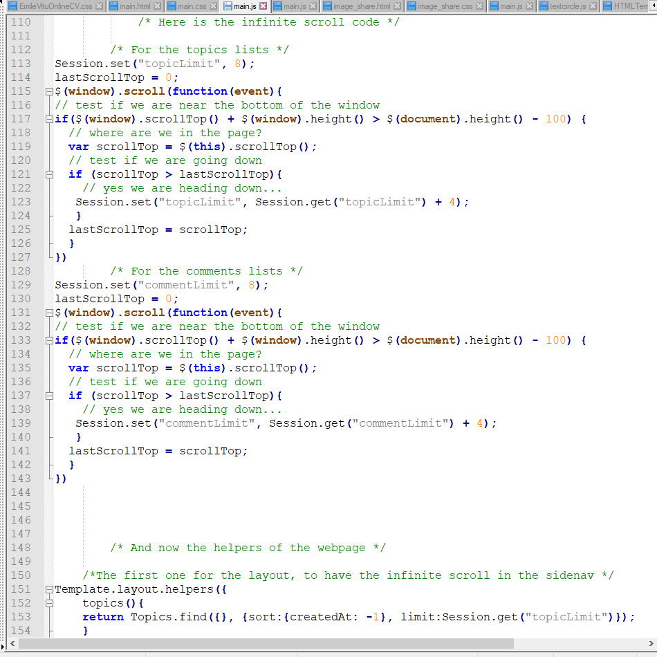
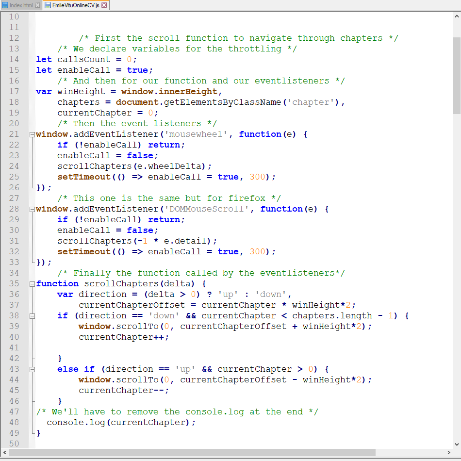
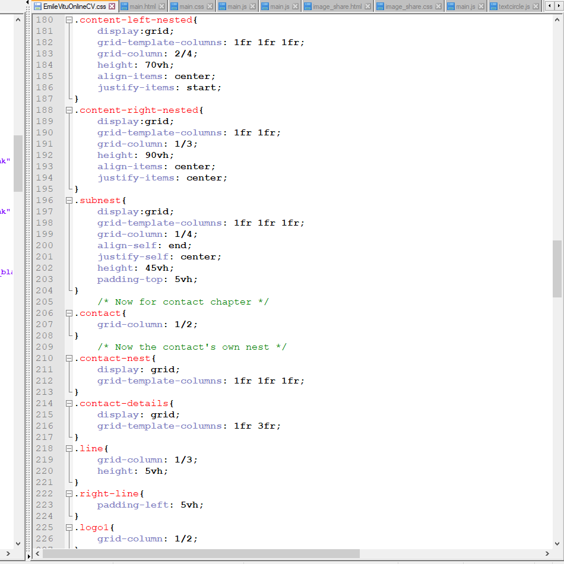

- Infinite scrolls:
- Reactive, using the Session variable,
- Implemented on every route,
- Implemented in the sidebar as well,
- to quickly search through all the latests topics.
Emile Vitu
Junior FullStack Web Developer
Course: Responsive Website Development and Design
At: Goldsmith - University of London, via Coursera
Welcome to my online web curriculum vitae.
On the brink of finishing an online course certification via Coursera, I am actively looking for a junior position in Web Development to make good use of my new skills and start tackling new exciting challenges!
Beware to be gentle with the mousewheel, the scrolling is sensitive on this page. You can also use the buttons on your left to navigate.
I hope you enjoy your visit!
My skills and certifications
Front-End
- HTML,
- CSS,
- JavaScript,
- Bootstrap,
- jQuery
Back-End
- Meteor.js framework,
- Node.js,
- MongoDB,
- Git & GitHub
My Projects
MusicBuddy
This is the first website I have been working on. I am developing it as the final project for my online certification. It is a forum-like website that allows people to discuss various topics around music.
These topics are ordered in 4 categories. Each authentified user can create topics about instruments, music theory or just miscellaneous subjects about music. Each topic has it's own discussion that any authentified user can participate to.
The last category "BuddyBands" is here to create discussions where people can meet, discuss their favorite music-styles, or just ask around for available musicians for instance, and eventually form bands!
Work is still on progress, but it should soon be ready to go!
Here are some features I have implemented in the website:


- Routing:
- For a quicker display of each rendered route,
- Allows to keep the same general layout on each route,
- And sometimes for specific database related routes,
- Calling on database items and Id's.

- Database security:
- User authentication,
- That allows some inserts in the databases,
- Under conditions, also allows queries,
- All of them are first checked on the server side.
- A reactive search tool:
- Allows any user to search the database,
- With a reactive tool accessible on all the webpages,
- Reacts and refreshes the search for each typed key.
- Reactively counts the number of result displayed.
- Adding and sharing media in each topics comment section:
- Allows authenticated users to share media,
- Images, links, sounds and videos!
- This will allow a better user experience,
- And mostly a better communication between MusicBuddys!
My online CV Website
This is the second website I have been working on.
I developed it as a way to quickly display my CV online.
It is a simple website that allows users to view my CV in a nicer way than the traditional one.
I have styled it with a minimalistic aspect, and implemented some effects as well
You are now browsing on it!

- Scroll events:
- Implemented on this very page,
- Allows navigation between the different chapters of this website,
- Either with the Mouse scrolls, or with the previous and next buttons,
- The backToTop button also uses a scroll function!

- CSS grids:
- To have a properly organised website,
- There is also three nested grids hidden,
- And also a subnest hidden in a nested grid!
- A life changer to website layouts!
Marketing blog-like website
This is a project I will soon be starting on a request.
It will be a blog-like website that will feature articles about communication , marketing and design inovation.
For the moment, regarding the design of the website, only the paper sketch draft with the main layout is ready. The content is also ready to be deployed!
Patience... In a few weeks, this website should be online!
How I work
- Here are the main work qualities I have acquired over time:
- Good project managment and timing,
- Adapting to client requests,
- Agile method scrum,
- SWOT Analysis (Strength, Weaknesses, Oportunity & Threats),
- Backing up static and online repositories with Git and GitHub,
- Preparing elevator pitches.
My story
In 2014, I obtained a Masters degree in Hydrogeology (University of Rennes - France),
I then worked for 6 years in various jobs including 3 years in Environmental consultancy.
In 2020, I decided to make a professional transition to Web-Development.
Indeed, I always have been very keen with IT, computing, gaming and new technologies,
furthermore, I already in the past have used some coding in HTML and in Python (with QGIS).
Despite that, I am a very devoted and passionate person, and I apreciate team-working,
and look forward to working on exciting projects, while achieving them flawlessly.
Finally, I have many passions such as piano and rugby playing.